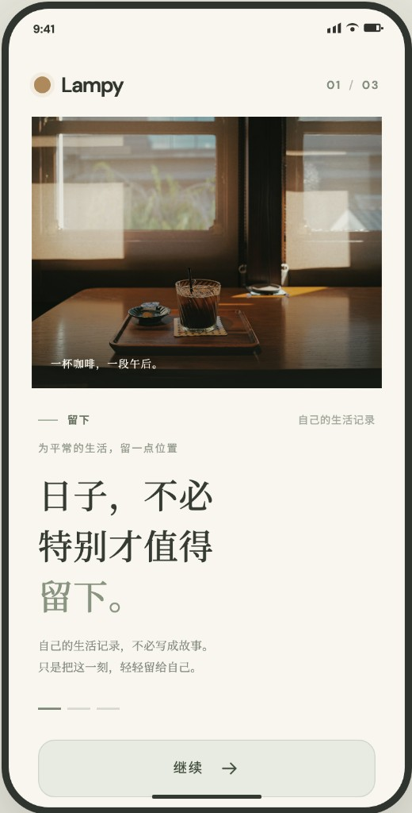
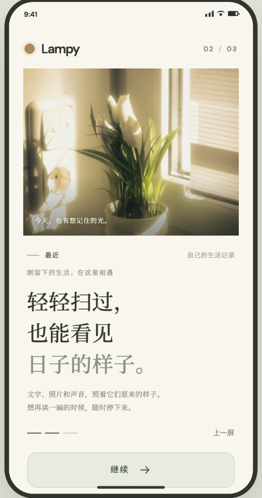
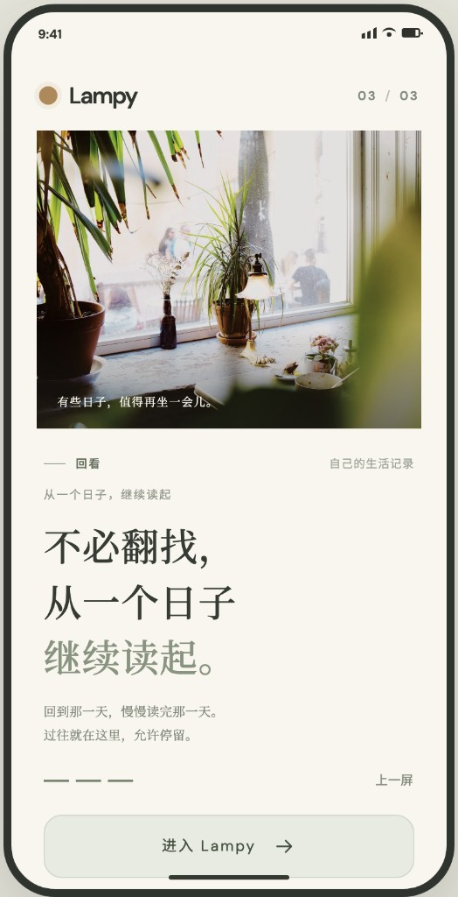
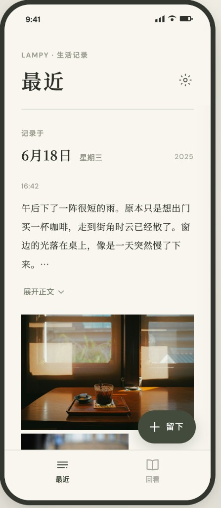
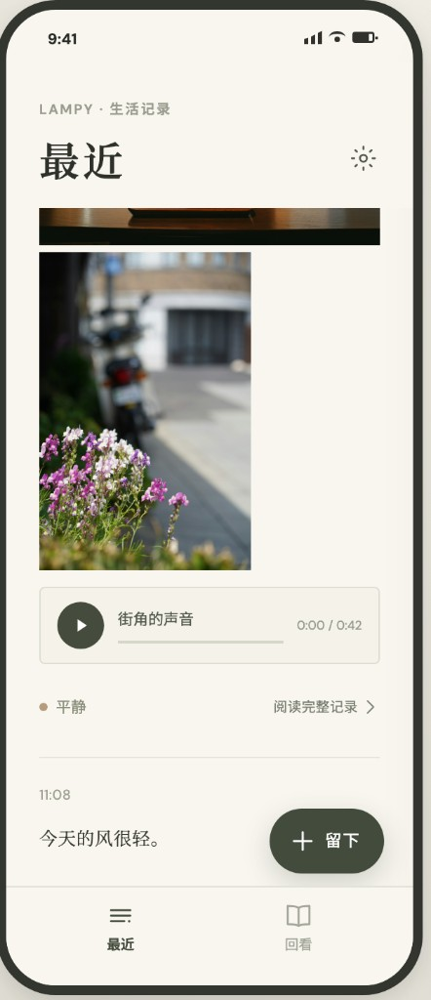
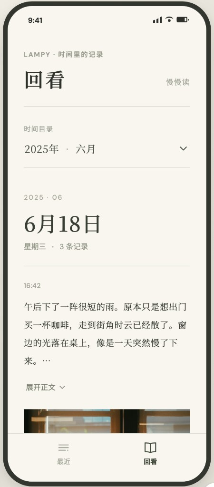
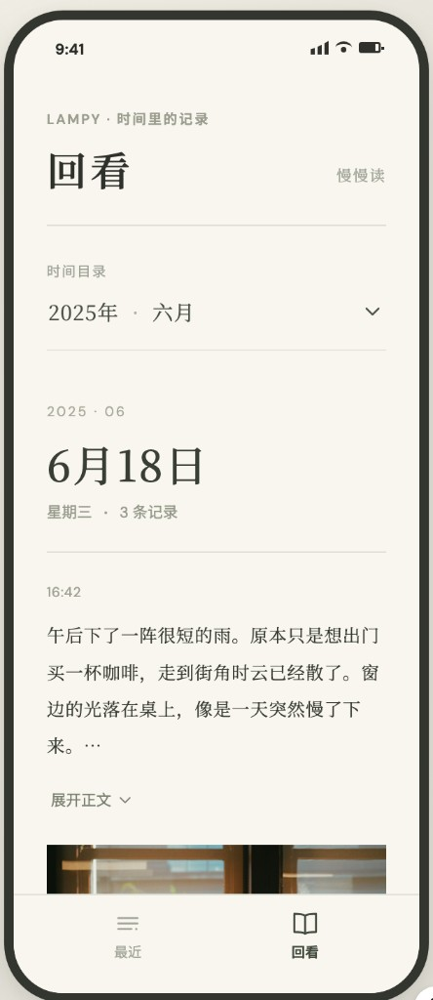

静态结构稿 · 不是运行 PASS · 参考图不是页面背景
最近 / 回看 / 三屏引导
同一批 #50 合成结构，按本目录取舍重画。Figma 截图只作气质参考。实现切片未开始。
采用：列宽浅线、原位展开 + 完整阅读、两项底带、浮动留下、三层引导文案。
不采用：72pt 短线、底带留下、功能标签、「不必翻找」、截图当背景、未确认前换字体。
参考图（只对照，不贴进手机框）







A. 三屏首次引导
日子，不必特别才值得留下。
自己的生活记录，不必写成故事。只是把这一刻，轻轻留给自己。
无「留下」标签、无小引言。照片是原型占位。
轻轻扫过，也能看见日子的样子。
文字、照片和声音，照着它们原来的样子。想再读的时候，可以停下来。
从一个日子，继续读起。
回到那一天，慢慢读完那一天。过往就在这里，允许停留。
不采用「不必翻找」。
B. 最近 · 同日四条（F-mix / audio / short / one）
最近
傍晚回家，楼道里还留着白天的热。门开了一半，桌上的杯子没洗。我把窗户推开一点，听见楼下有人在说话…
发生于 9月28日
门口的风还在。
短文无展开。浅线只在条之间。FAB 避让底带。
最近
门口那张。
那天下过雨。
F-missing / F-old。换日靠日期，不叠线。
最近
还没有留下。
想起来的时候，再写一句、一张照片，或一段声音。
E-empty。无假记录，空态不再堆第二个留下按钮。
C. 回看 · 目录 / 阅读 / 空 / 未确认
回看
慢慢看还没有日期的片段
这一年，月份未定
这个月，日子未定
条数在目录。FAB 是取舍覆盖，截图里没有。
9月27日
星期六
08:10
下午的走廊。
09:02
那天下过雨。
门口那张。
无 2026 · 09，无页首「11条」，条上不重复当天日期。
回看
慢慢看还没有可以回看的日子。
留下之后，会按发生的日期出现在这里。
无假日期、假章节、空目录。
D. 版式壳（同一 10月1日结构）
最近
门口的风还在。
V-xxxl。滚到条尾后入口必须完整可点。
最近
门口的风还在。
V-short。先减间距，不压行距。
最近
门口的风还在。
V-land。阅读列封顶，不是桌面双栏。
最近
门口的风还在。
V-ipad。日期可走左轨；大字号仍上下叠。